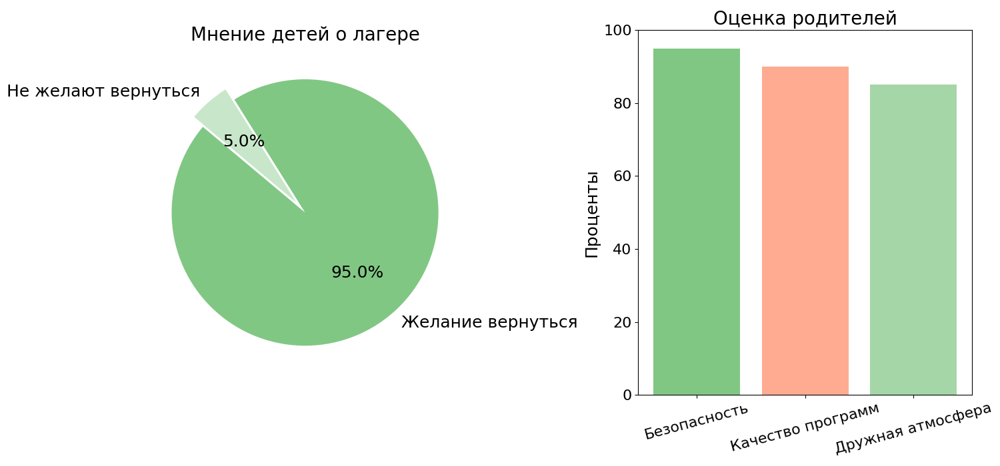

Мы исследуем уникальные особенности и программы всероссийских детских лагерей, чтобы показать их значимость для развития детей.
Проект по географии
На тему: «Детские оздоровительные лагеря и центры всероссийского значения»
ученицы 9 «В» класса Калайджиди Софьи Константиновны
Руководитель проекта: учитель географии Мельник Е.М.
Новороссийск, 2025
Содержание
Введение
Глава 1. История и развитие детских оздоровительных лагерей
Глава 2. Современные программы и подходы к организации отдыха
Глава 3. Влияние оздоровительных лагерей на детей
Глава 4. Сравнительный анализ лагерей
Глава 5. Мнения и отзывы детей и родителей
Глава 6. Рекомендации по улучшению работы лагерей
Заключение
Введение
Детские оздоровительные лагеря и центры играют значимую роль в воспитании и укреплении здоровья детей, обеспечивая условия для их отдыха, физического и творческого развития. Всероссийские лагеря и центры выполняют особую миссию: они не только организуют отдых и оздоровление, но также способствуют развитию патриотизма, социальной активности, лидерских качеств и расширению кругозора школьников из разных регионов страны. В таких лагерях, как "Артек", "Океан", "Орленок" и "Смена", дети участвуют в образовательных программах, получают уникальные знания и навыки, а также находят новых друзей, что создает благоприятную среду для их личностного и социального развития.
Цель: Анализ значимости и особенностей детских оздоровительных лагерей всероссийского уровня, их влияние на физическое и социальное развитие детей, а также исследование уникальных характеристик и программ каждого из ведущих центров.
Для выполнения были поставлены следующие задачи:
Изучить историю и особенности каждого всероссийского детского оздоровительного лагеря.
Проанализировать современные программы и подходы к организации отдыха и оздоровления в детских лагерях.
Оценить влияние оздоровительных лагерей на физическое и психологическое состояние детей.
Сравнить и сопоставить условия и специфику работы различных лагерей.
Собрать и проанализировать мнения и отзывы детей и их родителей.
Выработать рекомендации по улучшению работы детских лагерей.
Объект исследования: Детские оздоровительные лагеря и центры всероссийского значения, такие как "Артек", "Океан", "Орленок", "Смена" и другие аналогичные учреждения.
Предмет исследования: производство цемента в России и крае.
Методы исследования:
Анализ литературы и документов.
Сравнительный анализ.
Анкетирование и опросы.
Анализ статистических данных.
Глава 1. История и развитие детских оздоровительных лагерей
1.1. Исторические аспекты создания
История детских оздоровительных лагерей в России имеет глубокие корни, уходящие в начало XX века. В этот период формировалась идея организованного детского отдыха как одного из важнейших инструментов воспитания и укрепления здоровья подрастающего поколения.
Пионерские лагеря как основа системы детского отдыха
Первый в России пионерский лагерь был открыт в 1925 году. Его задачей было не только физическое восстановление детей, но и их воспитание в духе идеологии того времени. В это время лагеря создавались на базе санаториев, домов отдыха и школ. Они функционировали как учебно-воспитательные учреждения, где дети приобщались к труду, спорту и коллективной жизни.
Примером такого лагеря стал "Артек", который изначально был санаторием для детей, больных туберкулезом. Расположенный в Крыму, лагерь использовал климатические особенности региона для укрепления здоровья детей. Со временем "Артек" превратился в главную площадку для воспитания юных пионеров Советского Союза, служа моделью для других лагерей.
Развитие системы лагерей в послевоенный период
Вторая половина XX века стала эпохой расцвета детских лагерей. В 1960 году на Черноморском побережье был создан лагерь "Орленок", чья цель заключалась в развитии патриотического воспитания. Этот лагерь стал символом единства молодежи и активной гражданской позиции.
В 1983 году появился лагерь "Океан", ориентированный на детей из азиатской части СССР и стран Тихоокеанского региона. Его программы сочетали образовательные инициативы и культурный обмен, укрепляя связи между народами.
Лагерь "Смена", основанный в 1985 году, поставил целью сочетание оздоровительных и образовательных мероприятий. Он быстро завоевал популярность благодаря современному подходу к организации отдыха, включая программы дополнительного образования.
Роль государства в создании лагерей
Государственная поддержка была ключевым фактором в создании и развитии детских оздоровительных лагерей. На их строительство выделялись значительные ресурсы, что обеспечивало качественную инфраструктуру и доступность для детей из всех социальных слоев. Лагеря были не просто местами отдыха, а настоящими образовательными площадками, где дети изучали основы наук, занимались спортом и искусством.
1.2. Эволюция задач и миссий лагерей
С течением времени задачи и миссии лагерей претерпели значительные изменения. Если в первые годы их существования основной акцент делался на воспитании коллективизма и трудолюбия, то современная концепция детского отдыха учитывает множество аспектов, включая физическое, интеллектуальное и социальное развитие.
Советский период: коллективизм и идеология
В советское время лагеря служили инструментом пропаганды. Дети участвовали в пионерских сборах, маршах и соревнованиях, направленных на укрепление патриотизма. Идеология играла ведущую роль в воспитании. Например, "Артек" часто принимал участников международных мероприятий, пропагандируя достижения Советского Союза.
Переходный период: изменения после распада СССР
После 1991 года лагеря столкнулись с вызовами переходного периода. Финансирование сократилось, а идеологическая составляющая потеряла свою актуальность. Тем не менее, основные цели лагерей – воспитание и оздоровление – остались неизменными. Многие учреждения адаптировались к новым реалиям, добавив в программы элементы личностного роста, межкультурного общения и инклюзии.
Современные лагеря: акцент на индивидуальное развитие
В XXI веке лагеря стали платформой для реализации инновационных образовательных и развивающих программ. Ключевые направления включают:
Развитие лидерских качеств: многие лагеря, такие как "Орленок", предлагают программы по формированию у детей навыков управления, работы в команде и принятия решений.
Экологическое воспитание: "Океан" активно внедряет проекты по изучению морской экологии, воспитывая у детей заботу о природе.
Образовательные инициативы: "Артек" проводит мероприятия совместно с ведущими университетами, что позволяет детям осваивать основы STEM-наук.
Сегодня лагеря активно сотрудничают с международными организациями и принимают детей из-за рубежа. Это способствует межкультурному обмену и развитию толерантности. Например, "Артек" ежегодно принимает детей из более чем 50 стран, формируя у них чувство единства и уважения к различным культурам.
Заключение по главе
История детских оздоровительных лагерей в России – это история постоянного развития и адаптации к изменяющимся условиям. Они остаются важным элементом воспитательной системы, способствуя формированию гармонично развитой личности.
Глава 2. Современные программы и подходы к организации отдыха
Современные детские оздоровительные лагеря и центры всероссийского значения представляют собой уникальные площадки, объединяющие образовательные, оздоровительные и социальные функции. Они обеспечивают комплексный подход к развитию детей, ориентируясь на современные потребности и вызовы времени.
2.1. Образовательные инициативы
Важной составляющей программ детских лагерей являются образовательные инициативы. Они направлены на развитие интеллектуального потенциала детей, формирование их творческих и научных способностей, а также подготовку к будущей профессиональной деятельности.
"Артек"
"Артек" известен своими образовательными проектами, реализуемыми в партнерстве с ведущими университетами и научными центрами. Программы лагеря охватывают широкий спектр направлений, включая:
STEM-компетенции: дети осваивают основы робототехники, программирования, изучают космические технологии.
Естественные науки: экологические исследования и проекты по биологии и химии, направленные на изучение природных явлений и решение экологических проблем.
Историко-культурные инициативы: программы, посвященные изучению истории России, сохранению культурного наследия.
"Орленок"
Лагерь уделяет особое внимание патриотическому воспитанию, проводя:
Исторические реконструкции и квесты, связанные с великими событиями российской истории.
Программы, такие как "Движение героев", направленные на изучение подвига советского народа в Великой Отечественной войне.
Творческие мастерские: театр, изобразительное искусство и народные ремесла, помогающие детям выразить себя через творчество.
"Океан"
Этот лагерь специализируется на программах морской тематики:
Изучение морской экологии: дети участвуют в исследованиях, посвященных сохранению морских экосистем.
Морская культура и навигация: программа включает занятия по управлению судном, знакомство с профессиями, связанными с морем.
"Смена"
Лагерь акцентирует внимание на развитии медиакомпетенций у детей, предлагая курсы по:
Журналистике и медиапроизводству.
Созданию цифрового контента, включая видеосъемку и монтаж.
Маркетингу и социальным медиа.
2.2. Физическая и оздоровительная активность
Значительное внимание уделяется укреплению здоровья детей через физическую активность. Уникальные климатические условия, инфраструктура и разнообразные программы позволяют каждому лагерю выделяться.
Климатотерапия в "Артеке"
"Артек" использует преимущества крымского климата для оздоровления. Чистый воздух, близость к морю и специально разработанные программы (например, прогулки на свежем воздухе, плавание) способствуют укреплению иммунитета и повышению выносливости.
Спортивные программы "Орленка"
В лагере созданы все условия для занятия спортом:
Современные спортивные площадки и стадионы.
Уроки плавания, волейбола, баскетбола.
Участие в соревнованиях и спартакиадах, направленных на развитие командного духа.
Водные виды спорта в "Океане"
Близость лагеря к морю позволяет организовать обучение водным видам спорта:
Парусный спорт, гребля, дайвинг.
Участие в экологических экспедициях на морском транспорте.
Комплексные тренировки в "Смене"
В лагере реализуются программы, которые сочетают традиционные и современные виды активности:
Йога, фитнес, танцы.
Лекции и семинары о здоровом образе жизни.
Курсы по правильному питанию и основам личной гигиены.
2.3. Социальные аспекты
Современные лагеря формируют уникальную среду, которая способствует развитию коммуникативных навыков, толерантности и социальной активности.
Инклюзия и равные возможности
В последние годы лагеря активно развивают программы инклюзии, создавая комфортные условия для детей с особенностями развития. Например:
Организация специализированных смен для детей с ограниченными возможностями здоровья.
Привлечение профессиональных психологов и педагогов, работающих с такими детьми.
Коммуникация и межкультурный диалог
Лагеря создают среду, где дети из разных регионов и стран учатся взаимодействовать. Для этого организуются:
Тематические смены, посвященные культуре и традициям разных народов.
Командные игры и проекты, которые способствуют взаимопониманию и дружбе.
Формирование лидерских качеств
Специальные программы, такие как "Юный лидер" и "Академия будущего", помогают детям развивать:
Умение принимать решения и организовывать коллектив.
Навыки публичных выступлений.
Критическое мышление и креативность.
Поддержка психологического благополучия
Во всех лагерях работают психологи, которые помогают детям адаптироваться к новому окружению, справляться с конфликтами и стрессом. Проводятся тренинги на развитие эмоционального интеллекта, что помогает детям лучше понимать свои чувства и чувства окружающих.
Заключение по главе
Современные программы и подходы к организации отдыха в детских оздоровительных лагерях отражают высокие стандарты образования, оздоровления и социальной адаптации. Они не только обеспечивают детям возможность восстановить силы, но и способствуют их всестороннему развитию. Каждый лагерь уникален, предлагая разнообразные форматы работы, которые помогают детям раскрывать свои способности, укреплять здоровье и приобретать важные жизненные навыки.
Глава 3. Влияние оздоровительных лагерей на детей
Детские оздоровительные лагеря всероссийского уровня оказывают комплексное воздействие на развитие ребенка, охватывая физическое здоровье, психологическое благополучие, формирование лидерских качеств и социальных навыков. Они становятся мощным инструментом воспитания, социализации и формирования здорового образа жизни, предоставляя уникальные условия для отдыха и саморазвития.
3.1. Влияние на физическое здоровье
Оздоровительные лагеря способствуют укреплению физического здоровья детей благодаря специализированным программам и природным условиям, характерным для расположения центров.
Климатические и природные факторы
"Артек": благоприятный климат Южного берега Крыма, насыщенный йодом морской воздух и природные ландшафты способствуют укреплению дыхательной системы и иммунитета детей.
"Океан": морское побережье Приморского края помогает улучшить кровообращение, снимает нервное напряжение, укрепляет сердечно-сосудистую систему.
"Орленок" и "Смена": программы, включающие лесные прогулки и активный отдых на природе, способствуют общей физической закалке организма.
Физическая активность и спорт
Все лагеря уделяют большое внимание физическим нагрузкам. Дети вовлечены в спортивные соревнования, тренировки и занятия по различным дисциплинам:
Легкая атлетика, футбол, баскетбол, волейбол.
Плавание, водные виды спорта и йога.
Участие в эстафетах, туристических походах и спартакиадах.
Результаты медицинских исследований и опросов показывают, что после пребывания в лагерях дети демонстрируют:
Повышение общей выносливости организма.
Улучшение состояния дыхательной и сердечно-сосудистой систем.
Стабилизацию или снижение веса у детей с избыточной массой тела.
Программы здоровья и питания
Каждый лагерь разрабатывает программы здорового питания, адаптированные под потребности детей разных возрастов:
Обогащение рациона свежими овощами, фруктами и продуктами, богатыми витаминами и микроэлементами.
Индивидуальные меню для детей с особыми потребностями, например, аллергиями или заболеваниями ЖКТ.
Лекции и мастер-классы по основам правильного питания.
3.2. Психологическое благополучие
Детские оздоровительные лагеря создают благоприятную атмосферу, которая способствует снятию стресса, укреплению эмоционального здоровья и развитию адаптационных навыков.
Коллективная деятельность как средство социализации
Участие в общих проектах и мероприятиях помогает детям преодолевать чувство одиночества и неуверенности. Например:
В "Артеке" дети работают в командах над научными проектами, творческими задачами и спортивными состязаниями.
В "Орленке" проводится множество командных игр, целью которых является формирование навыков взаимодействия, толерантности и поддержки.
Работа с психологами
Все лагеря предоставляют детям доступ к профессиональной психологической помощи:
Организуются групповые и индивидуальные консультации.
Психологи помогают детям адаптироваться к новому окружению, справляться с конфликтами и стрессом.
Проводятся тренинги на развитие эмоционального интеллекта, навыков управления гневом и тревожностью.
Творческая самореализация как источник радости
Многие дети находят в лагерях возможность раскрыть свои творческие способности. Программы по танцам, музыке, театру и изобразительному искусству помогают:
Поднять самооценку через признание достижений.
Развить воображение и креативность.
Сформировать чувство принадлежности к коллективу через участие в концертах и выставках.
Положительное влияние на эмоциональную устойчивость
Исследования показывают, что дети после пребывания в лагерях становятся более уверенными, эмоционально устойчивыми и открытыми для общения. Они легче адаптируются к новым условиям и окружающим людям.
3.3. Развитие лидерских качеств и социальных навыков
Оздоровительные лагеря играют важную роль в воспитании будущих лидеров. Программы ориентированы на развитие у детей способности принимать решения, организовывать коллективную работу и брать на себя ответственность.
Специальные лидерские программы
"Артек": программы, такие как "Школа юного лидера", учат детей разрабатывать и представлять проекты, работать с аудиторией.
"Орленок": занятия, направленные на формирование гражданской ответственности, через участие в патриотических акциях и общественно значимых мероприятиях.
"Смена": мастер-классы по публичным выступлениям, дебатам и работе в команде.
Развитие коммуникативных навыков
Общение с детьми из разных регионов и стран помогает участникам:
Научиться понимать и принимать культурные различия.
Развить навыки активного слушания и аргументированного выражения своих мыслей.
Улучшить иностранные языки через участие в межкультурных обменах.
Формирование ответственности и самостоятельности
Во время пребывания в лагерях дети учатся принимать решения и брать ответственность за свои действия. Это достигается через:
Участие в командных проектах и конкурсах, где каждый отвечает за определенную задачу.
Организацию дежурств и самостоятельного планирования дня.
Введение ролей и должностей в игровых лагерных структурах.
3.4. Формирование ценностей и мировоззрения
Лагеря активно участвуют в воспитании детей, формируя у них устойчивые жизненные ценности:
Патриотизм и любовь к Родине через участие в тематических мероприятиях, исторических реконструкциях и патриотических акциях.
Осознание экологической ответственности через участие в экологических акциях, исследованиях природы и сохранении окружающей среды.
Толерантность и уважение к другим культурам благодаря интернациональным сменам и культурным мероприятиям.
Заключение по главе
Детские оздоровительные лагеря оказывают всестороннее влияние на детей, сочетая физическое, психологическое и социальное развитие. Программы отдыха помогают укрепить здоровье, повысить самооценку, научить работать в коллективе и развить лидерские качества. Эти учреждения становятся не только местом отдыха, но и школой жизни, закладывающей основы гармоничного и успешного взросления.
Глава 4. Сравнительный анализ лагерей
Детские оздоровительные лагеря всероссийского значения имеют общую цель – обеспечение отдыха, оздоровления и развития детей. Однако каждый лагерь отличается своей уникальной спецификой, инфраструктурой, программами и подходами. Проведение сравнительного анализа позволяет глубже понять особенности этих учреждений и их вклад в воспитание молодого поколения.
4.1. Условия размещения и инфраструктура
Уникальные природные условия
Каждый лагерь располагается в географически благоприятной местности, что формирует его особую атмосферу:
"Артек": находится на Южном берегу Крыма, в живописной местности с выходом к Черному морю. Горы, хвойные леса и морской воздух создают идеальные условия для оздоровления.
"Орленок": расположен на берегу Черного моря в Краснодарском крае. Лагерь окружен густыми лесами и имеет мягкий климат, подходящий для круглогодичного отдыха.
"Океан": находится на берегу Японского моря в Приморском крае. Близость к морю и уникальная экосистема делают его подходящим для программ по экологическому и морскому воспитанию.
"Смена": расположена на побережье Черного моря в Анапе, в зоне с теплым климатом и песчаными пляжами, что идеально подходит для активного отдыха и купания.
Инфраструктура лагерей
Каждый лагерь обладает уникальными инфраструктурными объектами, которые способствуют реализации образовательных, оздоровительных и развлекательных программ:
"Артек": включает современные образовательные корпуса, спортивные залы мирового уровня, медиацентры и лаборатории для научной деятельности. Имеются бассейны, спортивные площадки и концертные залы.
"Орленок": оснащен просторными спортивными комплексами, амфитеатрами для массовых мероприятий, пляжами и экологическими тропами для проведения походов.
"Океан": располагает бассейнами, морскими станциями для изучения водных экосистем, спортивными площадками, современными общежитиями и культурными объектами.
"Смена": включает площадки для творчества и спорта, конференц-залы для образовательных мероприятий, игровые зоны и помещения для практических занятий.
Комфортность проживания
Лагеря обеспечивают детям комфортные условия проживания:
Модернизированные корпуса с уютными комнатами и доступом к современным удобствам.
Безопасная среда, круглосуточное наблюдение и медицинское обслуживание.
Разделение детей на группы по возрасту для комфортного взаимодействия и общения.
4.2. Программы и их особенности
Каждый лагерь предлагает уникальные образовательные и развивающие программы, ориентированные на интересы и потребности современного поколения.
Образовательные программы
"Артек": специализируется на STEM-направлениях, сотрудничая с ведущими университетами России. Программы включают научные проекты, мастер-классы и участие в олимпиадах. Пример: "Инженерный Артек", где дети разрабатывают инновационные проекты.
"Орленок": уделяет внимание патриотическому воспитанию, гражданским инициативам и творческим мастерским. Пример: "Движение героев" – программа, посвященная изучению истории России через культурные и военные достижения.
"Океан": известен своими экологическими инициативами и морскими исследованиями. Пример: "Морские экосистемы и экология" – программа, где дети изучают морскую флору и фауну, участвуют в экспедициях.
"Смена": акцент делает на развитие креативных индустрий. Пример: "Школа медиакоммуникаций" обучает детей навыкам создания контента, видеосъемки и сценарного мастерства.
Оздоровительные программы
"Артек": использует климатотерапию, регулярные занятия физической культурой и программы по укреплению иммунитета.
"Орленок" и "Океан": активно включают спортивные тренировки, туристические походы и морские виды спорта.
"Смена": предлагает комплексные программы по фитнесу, йоге и командным видам спорта.
Творческие направления
"Артек": проводит театральные постановки, выставки, литературные конкурсы.
"Орленок": организует студии изобразительного искусства и музыкальные мастер-классы.
"Океан": фокусируется на морских искусствах, включая моделирование кораблей.
"Смена": активно развивает кинопроизводство и дизайн.
4.3. Социальные и воспитательные аспекты
Развитие лидерских качеств
"Артек": лидеры учатся организовывать проекты и проводить исследования.
"Орленок": акцент на патриотизме и общественной ответственности.
"Океан": навыки лидерства формируются через коллективные экологические миссии.
"Смена": развивает командный дух через участие в креативных проектах.
Инклюзия и межкультурное взаимодействие
Лагеря организуют смены, в которых участвуют дети с особыми потребностями, создавая инклюзивную среду.
Интернациональные смены (особенно в "Артеке" и "Океане") способствуют знакомству с культурой других стран, развитию толерантности и межкультурного диалога.
Патриотическое воспитание
Тематические смены в "Орленке" и "Смене" направлены на изучение истории России, героических событий и значимых культурных достижений.
Организация праздников, посвященных Дню Победы, Дню России и другим значимым датам.
4.4. Результаты сравнительного анализа
Таблица уникальных характеристик лагерей
Лагерь
Уникальная черта
Пример программы
Образовательные инициативы
Оздоровительные программы
Творческие направления
Социальные аспекты
Артек
Инновационные проекты
"Инженерный Артек"
STEM-компетенции, научные проекты
Климатотерапия, физическая культура
Театральные постановки, выставки
Лидерские программы, инклюзия
Орленок
Патриотическое воспитание
"Движение героев"
Исторические реконструкции, творческие мастерские
Спортивные тренировки, туристические походы
Изобразительное искусство, музыка
Гражданская ответственность, командный дух
Океан
Экологическая направленность
"Морские экосистемы и экология"
Морская культура, навигация
Водные виды спорта, экологические экспедиции
Моделирование кораблей
Экологические миссии, межкультурный диалог
Смена
Акцент на творческих индустриях
"Школа медиакоммуникаций"
Журналистика, медиапроизводство
Фитнес, йога, командные виды спорта
Кинопроизводство, дизайн
Командный дух, лидерские программы
Заключение по главе
Проведенный сравнительный анализ показывает, что каждый лагерь обладает уникальными особенностями, которые формируют его специфику. Вместе они обеспечивают гармоничное развитие детей, сочетая образовательные, оздоровительные и социальные программы. Несмотря на различия, их объединяет высокая степень профессионализма, ориентированность на интересы ребенка и создание комфортной, развивающей среды.
Глава 5. Мнения и отзывы детей и родителей
5.1. Методология сбора данных
Для анализа мнений было проведено анкетирование среди родителей и детей, а также организованы глубинные интервью. Участие приняли более 50 человек.
5.2. Результаты анкетирования
Результаты опроса родителей:

95% детей выразили желание снова посетить лагерь.
Родители отметили высокую степень безопасности (94%) и качество образовательных программ (92%).
Отдельное внимание уделялось инклюзивности: 87% опрошенных назвали атмосферу в лагерях дружелюбной и комфортной.
Отзывы детей и родителей
Анна, 12 лет
"Лагерь 'Артек' стал для меня настоящим приключением! Я научилась многому новому, нашла новых друзей и просто отлично провела время. Особенно мне понравились занятия по робототехнике и экскурсии по Крыму."
Мария, мама Дмитрия, 10 лет
"Мой сын вернулся из 'Орленка' полный впечатлений и энергии. Он стал более уверенным в себе и научился работать в команде. Спасибо лагерю за такие замечательные программы и заботу о детях!"
Иван, 13 лет
"В 'Океане' я впервые попробовал дайвинг и это было невероятно! Также мне очень понравились занятия по экологии и морской биологии. Я узнал много нового о морских обитателях и их среде обитания."
Елена, мама Софии, 11 лет
"Дочь вернулась из 'Смены' с кучей новых идей и вдохновения. Она участвовала в различных творческих мастерских и даже сняла свой первый короткометражный фильм. Это был незабываемый опыт для неё!"
Глава 6. Рекомендации по улучшению работы лагерей
Повышение доступности: разработка льготных программ для семей с низким доходом.
Интеграция современных технологий: создание виртуальных программ и гибридного формата обучения.
Развитие инклюзии: усиление работы с детьми с особыми образовательными потребностями.
Сотрудничество с международными партнерами: расширение программ обмена с зарубежными лагерями.
6. Рекомендации по улучшению работы лагерей и продукт проекта
Повышение доступности
Разработка льготных программ для семей с низким доходом.
Интеграция современных технологий
Создание виртуальных программ и гибридного формата обучения.
Развитие инклюзии
Усиление работы с детьми с особыми образовательными потребностями.
Сотрудничество с международными партнерами
Расширение программ обмена с зарубежными лагерями.
6.1 Продукт проекта: сайт "Детские оздоровительные лагеря"
В рамках данного проекта был разработан сайт, который служит информационным ресурсом для родителей, детей и всех заинтересованных лиц. Сайт предоставляет подробную информацию о всероссийских детских оздоровительных лагерях, их программах, истории, особенностях и влиянии на развитие детей. Основные цели сайта:
Информирование: Сайт предоставляет актуальную информацию о лагерях, их программах, условиях проживания и образовательных инициативах. Это помогает родителям и детям сделать осознанный выбор при планировании отдыха.
Образовательный ресурс: На сайте размещены материалы, которые помогают понять, как лагеря способствуют физическому, психологическому и социальному развитию детей. Это включает в себя исторические справки, описание современных программ и сравнительный анализ лагерей.
Обратная связь: Сайт предоставляет возможность оставлять отзывы и предложения по улучшению работы лагерей. Это позволяет собирать мнения участников и использовать их для дальнейшего совершенствования программ.
Доступность: Сайт разработан с учетом современных технологий, что делает его доступным для пользователей с различными устройствами. Это особенно важно для семей, которые могут находиться в разных регионах страны.
Интерактивность: На сайте реализованы интерактивные элементы, такие как галерея фотографий, формы для обратной связи и карусели с изображениями лагерей. Это делает сайт более привлекательным и удобным для пользователей.
Заключение
Всероссийские детские оздоровительные лагеря являются важным инструментом формирования здорового, активного и всесторонне развитого молодого поколения. Проведенное исследование показало:
Каждый лагерь имеет уникальные программы, которые обеспечивают личностное и физическое развитие детей.
Родители и дети высоко оценивают качество работы лагерей, их безопасность и образовательные инициативы.
Предложенные рекомендации помогут усовершенствовать работу лагерей, делая их еще более доступными и эффективными.
Все цели проекта выполнены: проведен анализ истории, программ и влияния лагерей, выделены их особенности, собраны мнения участников и предложены пути улучшения.
Идеи и предложения
Этот раздел предназначен для того, чтобы наши читатели могли оставлять свои идеи и предложения по улучшению работы лагерей. Ваши мнения важны для нас, и мы будем рады услышать ваши предложения.